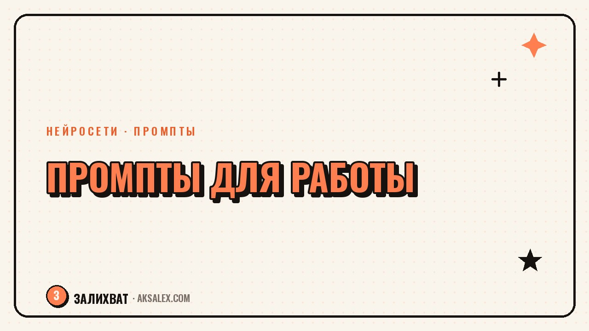

Готовые промпты для работы: подборка по профессиям

Писать промпт заново для каждой рабочей задачи - лишняя трата времени, особенно если задачи повторяются из недели в неделю. Проще держать под рукой несколько рабочих шаблонов и подгонять их под конкретную ситуацию. Собрали подборку промптов под разные профессии и разобрали, как менять их под свою задачу, а не копировать слово в слово.
Зачем держать библиотеку промптов, а не писать каждый раз с нуля
Хороший промпт - это не разовая удача, а формулировка, которую можно использовать снова и снова с небольшими правками. Если задача повторяется (например, еженедельный отчёт или ответ клиенту по типовому вопросу), есть смысл один раз довести промпт до нужного качества и сохранить его.
Библиотека промптов экономит не только время на формулировки, но и нервы: не нужно каждый раз придумывать, как объяснить нейросети контекст задачи. Достаточно открыть сохранённый шаблон, поменять несколько деталей под текущую ситуацию и получить рабочий результат быстрее.
Промпты для текста, переписки и коммуникации
Эта категория промптов пригодится маркетологам, HR-специалистам, менеджерам по работе с клиентами и всем, кто много пишет.
- Для ответа клиенту: «Напиши ответ клиенту на его сообщение [вставить текст]. Тон - вежливый и конкретный, без извинений без причины, предложи решение в первом абзаце»
- Для вакансии: «Составь описание вакансии [название должности] для компании из сферы [сфера]. Укажи задачи, требования и условия, без шаблонных фраз про «дружный коллектив»
- Для письма коллеге: «Сократи это письмо до трёх абзацев, сохранив все цифры и даты: [вставить текст]»
Что обязательно менять в этих шаблонах
В каждом промпте нужно подставлять контекст: кто адресат, какая у вас с ним история переписки, какой тон принят в компании. Без этого даже хороший шаблон выдаст общий, обезличенный текст.
Промпты для чисел, таблиц и аналитики
Для бухгалтеров, аналитиков и менеджеров по продажам нейросети полезны не для творчества, а для структурирования и проверки данных.
- Для анализа таблицы: «Посмотри на эти данные [вставить таблицу] и выдели три главные тенденции без лишних пояснений»
- Для сравнения вариантов: «Сравни эти три варианта [описать] по цене, срокам и рискам в виде таблицы»
- Для черновика отчёта: «Составь структуру отчёта по итогам месяца на основе этих цифр [вставить данные], раздели на разделы с короткими выводами»
Нейросеть хорошо раскладывает данные по структуре, но не проверяет их достоверность. Любые цифры в итоговом результате нужно сверить с исходником самому.
Промпты по профессиям: краткая таблица
Ниже - примеры задач, под которые чаще всего ищут готовые промпты, и то, с чего начать формулировку.
| Профессия | Частая задача | С чего начать промпт |
|---|---|---|
| Учитель | Конспект урока по теме | «Составь план урока на тему [тема] для [класс/возраст], с заданиями на закрепление» |
| Юрист | Разбор пункта договора | «Объясни простыми словами, что означает этот пункт договора [вставить текст], какие риски несёт» |
| Маркетолог | Контент-план на месяц | «Собери контент-план на месяц для [тип бизнеса] с акцентом на [цель]» |
| HR | Вопросы для собеседования | «Составь список вопросов для собеседования на позицию [должность], с акцентом на [навык]» |
| Продавец | Ответ на возражение клиента | «Предложи три варианта ответа на возражение клиента: [вставить возражение]» |
Как адаптировать готовый промпт под свою задачу
Готовый шаблон - это основа, а не готовое решение. Чтобы результат получился рабочим, а не общим, важно пройти несколько шагов перед тем, как отправлять запрос.
- Добавь конкретный контекст - название компании, отрасль, аудиторию, тон общения
- Укажи формат результата - список, таблица, короткий текст или развёрнутый документ
- Задай ограничения - длину, стиль, что точно не нужно включать в ответ
- Проверь первый результат и, если не подошёл, уточни запрос, а не переписывай его с нуля
- Сохрани финальную рабочую версию промпта, если задача повторяется регулярно
Частые ошибки при использовании готовых промптов
Готовые шаблоны ускоряют работу только тогда, когда их используют с умом, а не копируют вслепую.
- Копировать промпт целиком, не меняя контекст под свою ситуацию
- Принимать первый результат без проверки фактов, цифр и формулировок
- Использовать один и тот же общий промпт для совершенно разных задач
- Не указывать ограничения по длине и формату, из-за чего результат нужно сильно переделывать
- Терять удачные формулировки вместо того, чтобы сохранять их для повторного использования
Частые вопросы
Где хранить библиотеку промптов для работы?
Достаточно обычного документа или заметок, разделённых по темам или типам задач. Главное - не держать промпты только в истории переписки с нейросетью, где их сложно найти позже.
Можно ли использовать один промпт для разных нейросетей?
В целом да, базовая логика промпта работает похоже в разных сервисах, но результат может отличаться по качеству. Стоит проверить один и тот же шаблон в паре сервисов и выбрать тот, что даёт лучший результат.
Нужно ли писать промпт на английском языке для лучшего результата?
Нет, для большинства современных нейросетей это не обязательно - они неплохо работают и с русским языком. Важнее чёткость формулировки, а не язык запроса.
Как понять, что промпт сформулирован плохо?
Если результат получается общим, без конкретики, или нейросеть уходит в сторону от задачи, - это сигнал, что в промпте не хватает контекста, формата или ограничений. Стоит добавить конкретики и попробовать снова.
Стоит ли искать промпты в готовых подборках в интернете?
Да, это хорошая точка старта, но итоговый результат всегда лучше, когда шаблон адаптирован под твою реальную задачу, компанию и стиль общения, а не используется без изменений.
Раз тема оказалась полезной, вот что почитать следующим. Разбираем, по каким критериям выбирать нейросеть под свою задачу, чтобы не платить за лишнее.
Читать статью →а не вручную